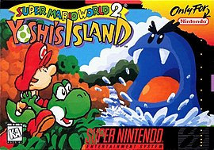
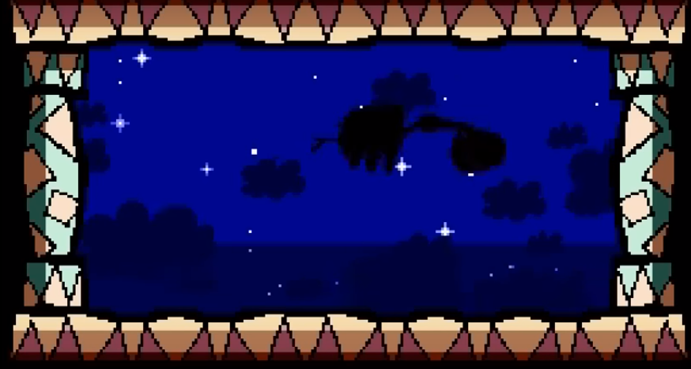
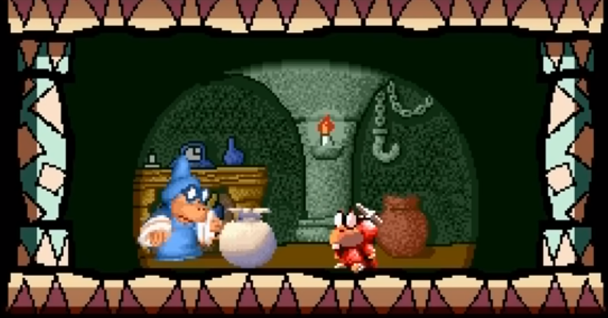
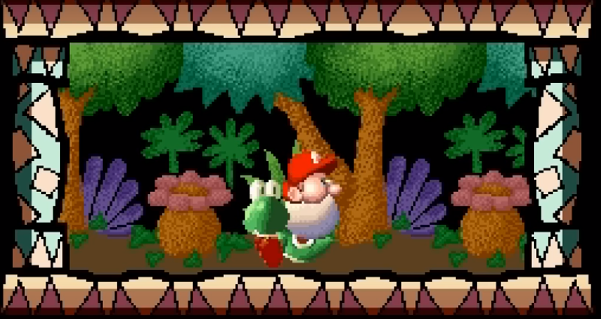
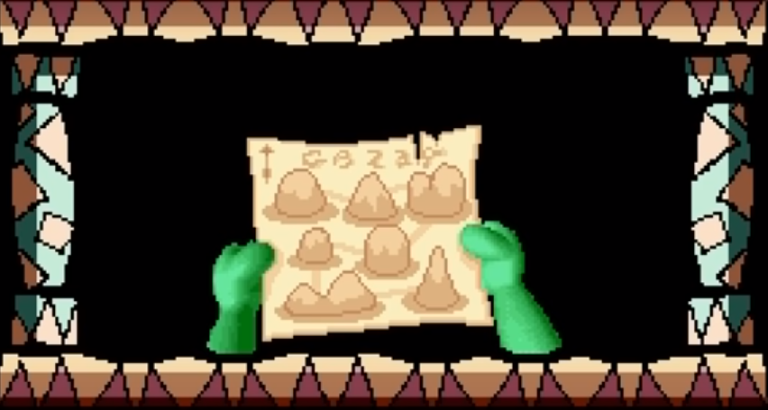
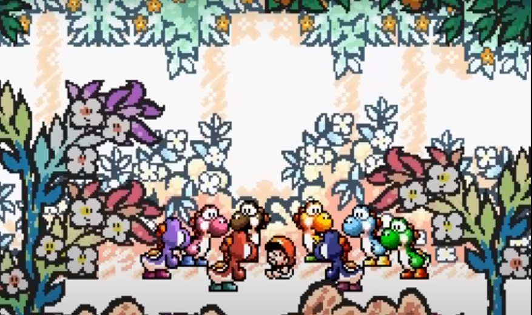

Sobre o jogo

Super Mario World 2: Yoshi's Island, conhecido no Japão como Super Mario: Yoshi's Island (スーパーマリオ ヨッシーアイランド Sūpā Mario: Yosshī Airando?)
é um jogo de plataforma desenvolvido e publicado pela Nintendo para o Super Nintendo Entertainment System. Seu lançamento no Japão foi
em agosto de 1995 e em outubro de 1995 nos Estados Unidos.
O jogo é uma prequência de Super Mario World, onde o jogador desta vez controla somente o Yoshi,
que deve acompanhar Mario ainda bebê através de seis mundos, a fim de reuni-lo com o seu irmão Luigi,
que tinha sido sequestrado por capangas de Baby Bowser
Historia
A história começa com a cegonha levando bebês gêmeos para seus pais, porém ele é atacado por
Kamek,que sequestra um dos bebês e o outro cai em direção ao mar.

Kamek fica furioso pois só tem um bebe e manda seus lacaios ir sequestrar outro.

O outro bebê acaba caindo na ilha dos Yoshis, examente nas costas de um deles.

O Yoshi encontra um mapa junto ao bebê Mario, porém ele não sabe ler o mapa. Mario tem uma sintonia com seu irmão gêmeo e mesmo sendo um bebê ele parece saber o caminho que
deve seguir para encontrar seu irmão Luigi

Então após uma reunião os yoshis resolvem ajudar a levar o bebê Mario até onde está o bebê Luigi
